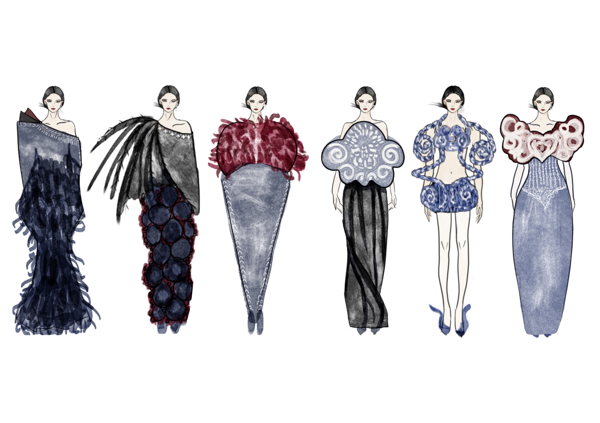
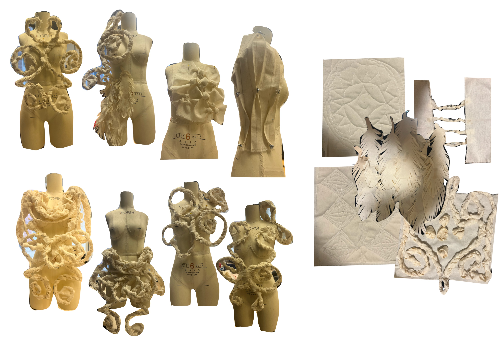
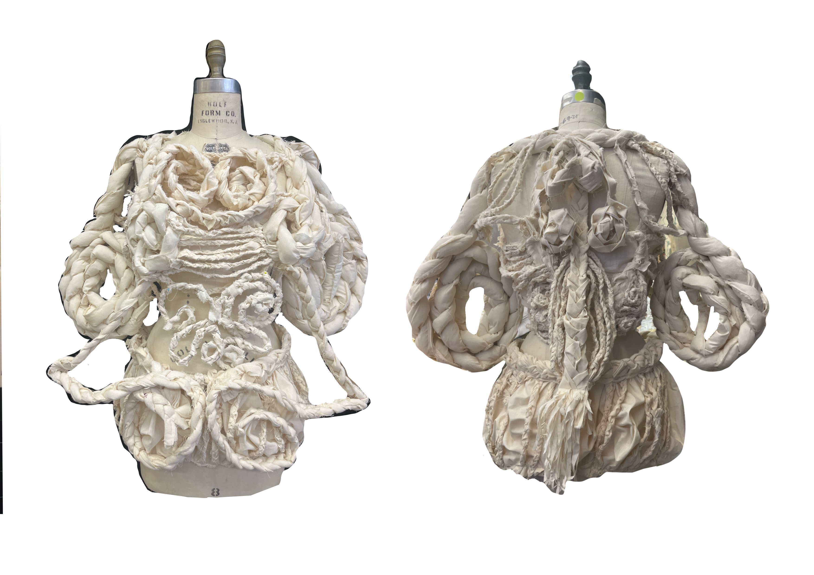

Nosu


May 7, 2026
This garment draws inspiration from the rich cultural heritage of the Nosu (Yi) minority group, reinterpreting its traditional cultural essence through a contemporary lens. I intentionally break free from conventional ethnic costume silhouettes, deconstructing and reimagining classic structural forms to craft fluid proportions that bridge heritage and avant-garde design.

Illustrations

Fabric manipulation & Drapings

Muslin
Natural hand dye
Serial Killer

DATE HERE
LARGE STARTING TEXT HERE
SMALLER DETAILED TEXT HERE
Window
Built with CSS 3D transforms, requestAnimationFrame for smooth interaction, and a variable-based zoom system. This project pushes the limits of standard DOM manipulation.
Sand
Built with CSS 3D transforms, requestAnimationFrame for smooth interaction, and a variable-based zoom system. This project pushes the limits of standard DOM manipulation.
Abbebe
From initial sketches to digital prototypes, the process involved rigorous testing of camera angles and rotation physics to ensure the 3D book felt natural to the touch.
Nosu Blooom
Built with CSS 3D transforms, requestAnimationFrame for smooth interaction, and a variable-based zoom system. This project pushes the limits of standard DOM manipulation.
Memory
Built with CSS 3D transforms, requestAnimationFrame for smooth interaction, and a variable-based zoom system. This project pushes the limits of standard DOM manipulation.
Universe Phonebooth
Built with CSS 3D transforms, requestAnimationFrame for smooth interaction, and a variable-based zoom system. This project pushes the limits of standard DOM manipulation.
Other Works
Future iterations will include dynamic page loading and enhanced VR support, allowing users to step inside the book environment through a headset.